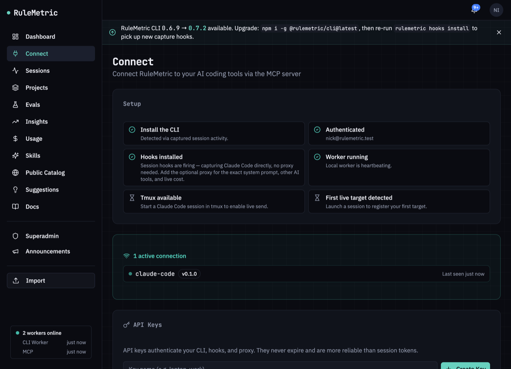
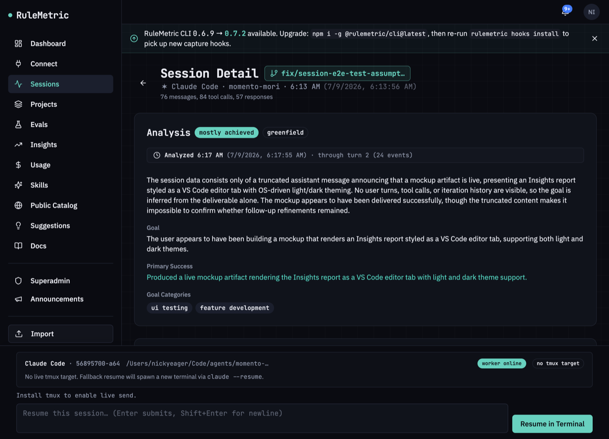
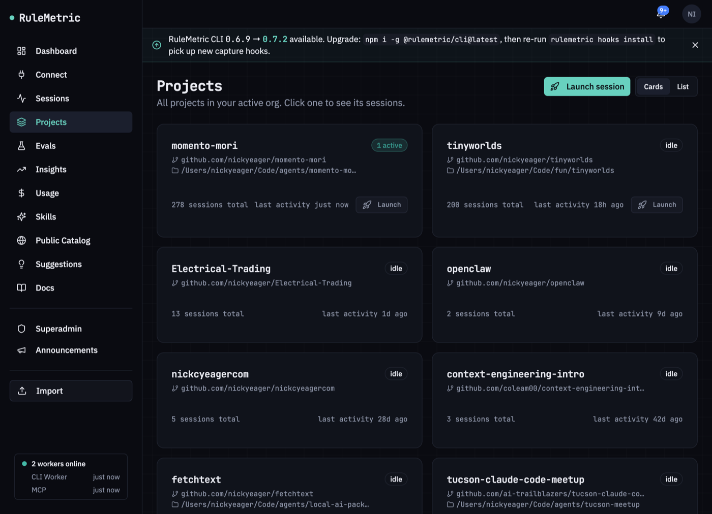
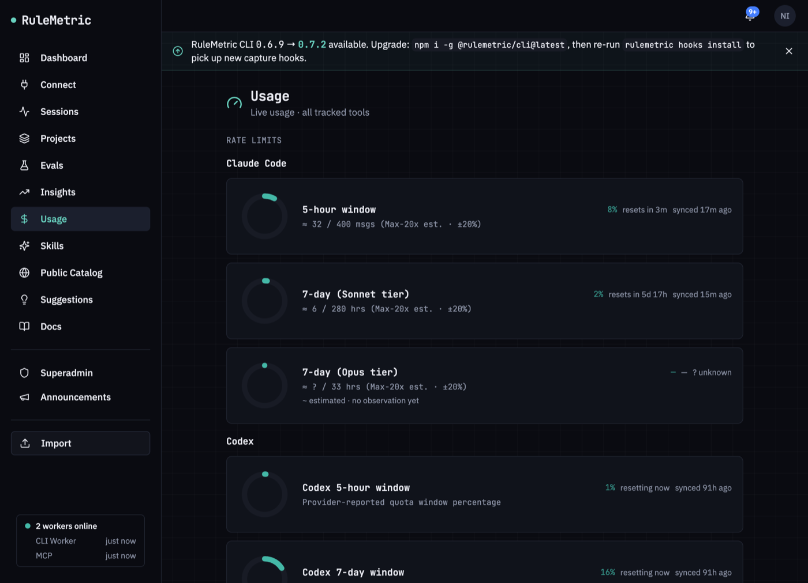
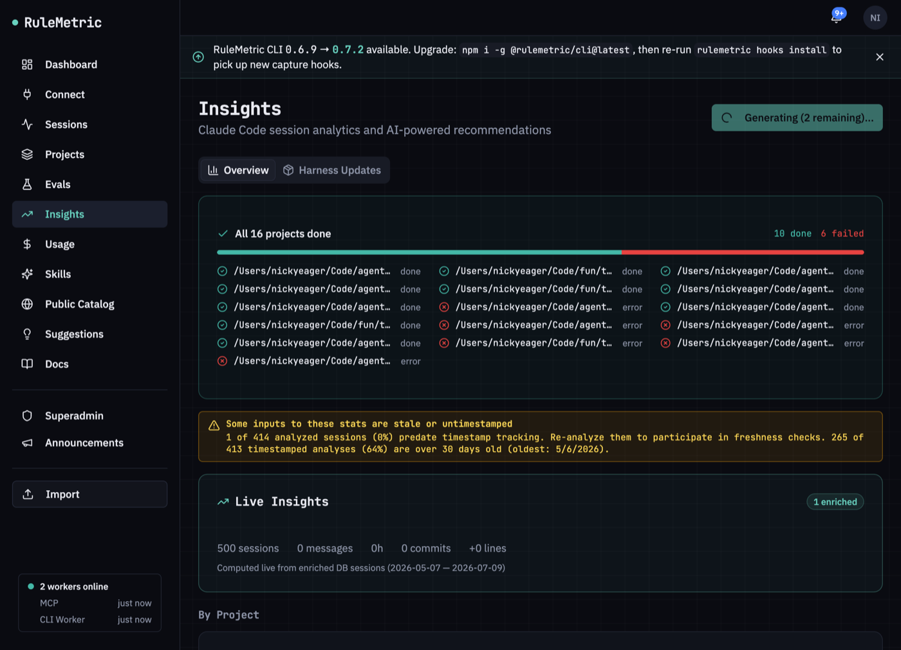
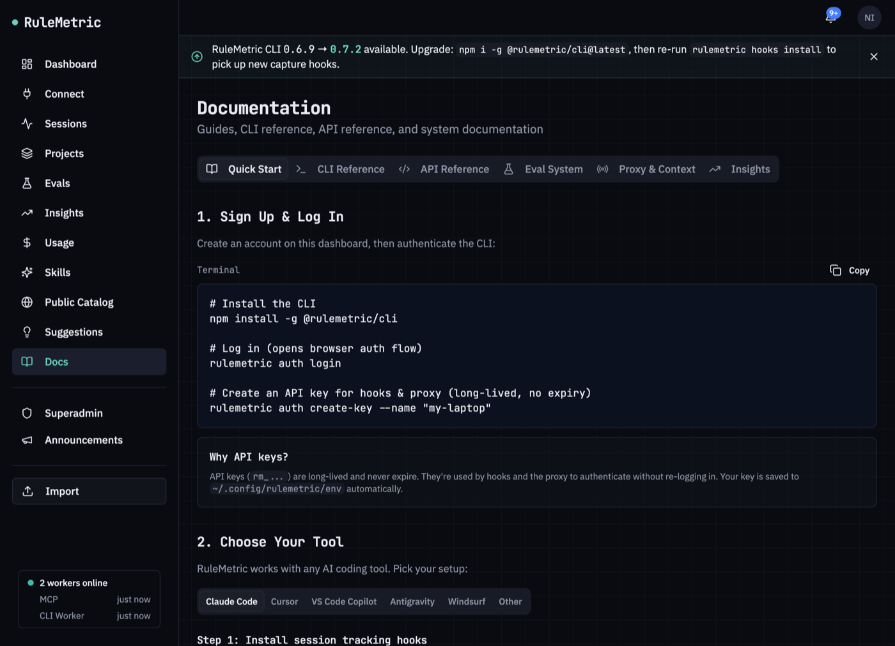

<title>RuleMetric — Onboarding Guide</title>
<style>
  :root {
    --bg: #f6f7f9;
    --surface: #ffffff;
    --surface-2: #eef1f5;
    --ink: #1a2233;
    --ink-soft: #4a5468;
    --ink-faint: #7a8397;
    --line: #dfe4ec;
    --line-strong: #c9d1de;
    --accent: #2f6bff;
    --accent-soft: #e7edff;
    --good: #1f9d63;
    --good-soft: #e2f4ea;
    --warn: #b5730a;
    --warn-soft: #f8efdd;
    --term-bg: #0d1526;
    --term-ink: #cfd8ee;
    --term-dim: #6f7c9c;
    --term-accent: #63b3ff;
    --term-good: #52d19a;
    --radius: 10px;
    --measure: 42rem;
    --mono: ui-monospace, "SF Mono", "JetBrains Mono", "Menlo", monospace;
    --sans: -apple-system, BlinkMacSystemFont, "Segoe UI", Helvetica, Arial, sans-serif;
  }
  @media (prefers-color-scheme: dark) {
    :root {
      --bg: #0a0e17;
      --surface: #121826;
      --surface-2: #1a2233;
      --ink: #e7ecf5;
      --ink-soft: #a9b3c7;
      --ink-faint: #6f7c95;
      --line: #232c3f;
      --line-strong: #303c54;
      --accent: #6a97ff;
      --accent-soft: #17233f;
      --good: #4bc98a;
      --good-soft: #123024;
      --warn: #e0a341;
      --warn-soft: #2e2412;
      --term-bg: #070c16;
      --term-ink: #cfd8ee;
      --term-dim: #63708f;
    }
  }
  :root[data-theme="light"] {
    --bg: #f6f7f9; --surface: #ffffff; --surface-2: #eef1f5; --ink: #1a2233;
    --ink-soft: #4a5468; --ink-faint: #7a8397; --line: #dfe4ec; --line-strong: #c9d1de;
    --accent: #2f6bff; --accent-soft: #e7edff; --good: #1f9d63; --good-soft: #e2f4ea;
    --warn: #b5730a; --warn-soft: #f8efdd; --term-bg: #0d1526; --term-ink: #cfd8ee;
    --term-dim: #6f7c9c;
  }
  :root[data-theme="dark"] {
    --bg: #0a0e17; --surface: #121826; --surface-2: #1a2233; --ink: #e7ecf5;
    --ink-soft: #a9b3c7; --ink-faint: #6f7c95; --line: #232c3f; --line-strong: #303c54;
    --accent: #6a97ff; --accent-soft: #17233f; --good: #4bc98a; --good-soft: #123024;
    --warn: #e0a341; --warn-soft: #2e2412; --term-bg: #070c16; --term-ink: #cfd8ee;
    --term-dim: #63708f;
  }

  * { box-sizing: border-box; }
  body {
    margin: 0; background: var(--bg); color: var(--ink);
    font-family: var(--sans); line-height: 1.6;
    -webkit-font-smoothing: antialiased;
  }
  .wrap { max-width: var(--measure); margin: 0 auto; padding: 0 1.4rem 5rem; }

  /* Masthead */
  header.mast {
    max-width: var(--measure); margin: 0 auto; padding: 3.4rem 1.4rem 2rem;
  }
  .eyebrow {
    font-family: var(--mono); font-size: .72rem; letter-spacing: .16em;
    text-transform: uppercase; color: var(--accent); font-weight: 600;
    display: flex; align-items: center; gap: .6rem;
  }
  .eyebrow::before {
    content: ""; width: 26px; height: 2px; background: var(--accent); display: inline-block;
  }
  h1 {
    font-size: clamp(2rem, 5vw, 2.9rem); line-height: 1.08; letter-spacing: -.02em;
    margin: .9rem 0 .8rem; text-wrap: balance; font-weight: 700;
  }
  .lede { font-size: 1.12rem; color: var(--ink-soft); max-width: 34rem; margin: 0; }
  .lede strong { color: var(--ink); font-weight: 600; }
  .stamp {
    margin-top: 1.6rem; display: inline-flex; gap: .5rem; align-items: center;
    font-family: var(--mono); font-size: .74rem; color: var(--ink-faint);
    background: var(--surface); border: 1px solid var(--line); border-radius: 100px;
    padding: .34rem .8rem;
  }
  .stamp b { color: var(--good); font-weight: 600; }

  h2 {
    font-size: 1.5rem; letter-spacing: -.01em; margin: 3.2rem 0 .3rem;
    scroll-margin-top: 1rem; font-weight: 680;
  }
  h2 .n {
    font-family: var(--mono); font-size: .95rem; color: var(--accent);
    background: var(--accent-soft); border-radius: 7px; padding: .1rem .5rem;
    margin-right: .6rem; vertical-align: .12em;
  }
  h3 { font-size: 1.06rem; margin: 2rem 0 .2rem; font-weight: 640; }
  p { margin: .7rem 0; }
  a { color: var(--accent); text-decoration: none; border-bottom: 1px solid transparent; }
  a:hover { border-bottom-color: currentColor; }
  strong { font-weight: 640; }

  .sub { color: var(--ink-soft); font-size: .96rem; margin-top: .1rem; }

  code {
    font-family: var(--mono); font-size: .86em; background: var(--surface-2);
    border: 1px solid var(--line); border-radius: 5px; padding: .08em .38em;
    color: var(--ink);
  }

  /* Terminal blocks */
  .term {
    background: var(--term-bg); border-radius: var(--radius); margin: 1rem 0;
    overflow: hidden; border: 1px solid rgba(255,255,255,.06);
    box-shadow: 0 8px 30px -18px rgba(0,0,0,.5);
  }
  .term-bar {
    display: flex; align-items: center; gap: .45rem; padding: .6rem .8rem;
    border-bottom: 1px solid rgba(255,255,255,.06);
  }
  .term-bar i { width: 10px; height: 10px; border-radius: 50%; background: #3a4763; display: block; }
  .term-bar span {
    margin-left: .5rem; font-family: var(--mono); font-size: .7rem;
    color: var(--term-dim); letter-spacing: .04em;
  }
  .term pre {
    margin: 0; padding: .95rem 1.1rem; overflow-x: auto;
    font-family: var(--mono); font-size: .84rem; line-height: 1.7; color: var(--term-ink);
  }
  .term .c { color: var(--term-good); }        /* command */
  .term .d { color: var(--term-dim); }          /* comment/dim */
  .term .p { color: var(--term-accent); }       /* prompt/flag */

  /* Callouts */
  .note {
    border: 1px solid var(--line); border-left: 3px solid var(--accent);
    background: var(--surface); border-radius: 8px; padding: .85rem 1.05rem;
    margin: 1.1rem 0; font-size: .93rem; color: var(--ink-soft);
  }
  .note b { color: var(--ink); }

  /* Featured "recommended path" callout */
  .feature {
    background: var(--accent-soft);
    border: 1px solid color-mix(in srgb, var(--accent) 30%, transparent);
    border-radius: var(--radius); padding: 1.1rem 1.2rem; margin: 1.1rem 0 1.3rem;
  }
  .feature .flabel {
    display: inline-flex; align-items: center; gap: .5rem;
    font-family: var(--mono); font-size: .68rem; letter-spacing: .1em;
    text-transform: uppercase; font-weight: 600; color: var(--accent);
  }
  .feature .flabel::before {
    content: "★"; font-size: .8rem; line-height: 1;
  }
  .feature h3.ftitle { margin: .5rem 0 .2rem; font-size: 1.12rem; color: var(--ink); }
  .feature p { margin: .35rem 0 0; font-size: .95rem; color: var(--ink-soft); }
  .feature .fsteps {
    margin: .7rem 0 0; padding: 0; list-style: none; display: grid; gap: .3rem;
    font-size: .92rem; color: var(--ink-soft);
  }
  .feature .fsteps li { padding-left: 1.4rem; position: relative; }
  .feature .fsteps li::before {
    counter-increment: fs; content: counter(fs); position: absolute; left: 0; top: .05rem;
    font-family: var(--mono); font-size: .7rem; font-weight: 600; color: var(--accent);
    background: var(--surface); border: 1px solid color-mix(in srgb, var(--accent) 35%, transparent);
    width: 1.05rem; height: 1.05rem; border-radius: 50%;
    display: grid; place-items: center;
  }
  .feature ol.fsteps { counter-reset: fs; }
  .feature .where {
    margin-top: .8rem; font-size: .84rem; color: var(--ink-faint);
    padding-top: .7rem; border-top: 1px solid color-mix(in srgb, var(--accent) 18%, transparent);
  }
  .feature .where code { background: var(--surface); }

  /* Figures */
  figure { margin: 1.3rem 0 .4rem; }
  figure img {
    width: 100%; height: auto; display: block; border-radius: var(--radius);
    border: 1px solid var(--line-strong);
    box-shadow: 0 14px 40px -24px rgba(20,30,60,.45);
  }
  figcaption {
    font-size: .82rem; color: var(--ink-faint); margin-top: .55rem;
    font-family: var(--mono); letter-spacing: .01em;
  }

  hr { border: 0; border-top: 1px solid var(--line); margin: 3rem 0 0; }

  /* Requirements list */
  ul.req { list-style: none; padding: 0; margin: 1rem 0; display: grid; gap: .55rem; }
  ul.req li {
    padding-left: 1.5rem; position: relative; color: var(--ink-soft);
  }
  ul.req li::before {
    content: "›"; position: absolute; left: .35rem; color: var(--accent);
    font-weight: 700;
  }
  ul.req li b { color: var(--ink); }

  /* Rough edges */
  .edges { display: grid; gap: .1rem; margin: 1.2rem 0; }
  .edge {
    display: grid; grid-template-columns: auto 1fr; gap: .8rem;
    padding: .85rem 0; border-top: 1px solid var(--line); align-items: start;
  }
  .edge:last-child { border-bottom: 1px solid var(--line); }
  .edge .tag {
    font-family: var(--mono); font-size: .68rem; text-transform: uppercase;
    letter-spacing: .08em; color: var(--warn); background: var(--warn-soft);
    border-radius: 5px; padding: .18rem .5rem; white-space: nowrap; margin-top: .12rem;
  }
  .edge p { margin: 0; font-size: .93rem; color: var(--ink-soft); }
  .edge p b { color: var(--ink); }

  .foot {
    margin-top: 3rem; padding-top: 1.4rem; border-top: 1px solid var(--line);
    font-size: .9rem; color: var(--ink-faint);
  }
  .grid2 { display: grid; grid-template-columns: 1fr 1fr; gap: .7rem; margin: 1rem 0; }
  @media (max-width: 560px) { .grid2 { grid-template-columns: 1fr; } }

  @media (prefers-reduced-motion: no-preference) {
    figure img { transition: box-shadow .3s ease; }
  }
</style>

<header class="mast">
  <div class="eyebrow">Onboarding&nbsp;·&nbsp;Invited test users</div>
  <h1>Get RuleMetric running in about five minutes.</h1>
  <p class="lede">RuleMetric is a control plane for AI coding agents. It captures how you
  actually use Claude Code, Cursor, and Copilot, then measures <strong>which instructions
  make the agent better</strong> — with-vs-without, on your real sessions.</p>
  <div class="stamp">verified against CLI <b>0.7.3</b> · 2026-07-09 · screenshots are the real app</div>
</header>

<main class="wrap">

  <h2>Before you start</h2>
  <ul class="req">
    <li><b>Node.js 20.11 or newer.</b> Older Node has a known bug in the capture proxy.</li>
    <li><b>macOS or Linux.</b> The background worker installs as a launchd agent (macOS)
      or a systemd <code>--user</code> unit (Linux).</li>
    <li><b>An AI coding tool you already use</b> — Claude Code is the best-supported.</li>
  </ul>

  <h2><span class="n">1</span>Create your account</h2>
  <p class="sub">Sign up at <a href="https://rulemetric.com/signup">rulemetric.com/signup</a>,
  or from the terminal once the CLI is installed with <code>rulemetric auth signup</code>.</p>

  <h2><span class="n">2</span>Install the CLI</h2>
  <div class="term">
    <div class="term-bar"><i></i><i></i><i></i><span>zsh</span></div>
<pre><span class="p">$</span> <span class="c">npm install -g @rulemetric/cli</span></pre>
  </div>

  <h2><span class="n">3</span>Run setup</h2>

  <div class="feature">
    <span class="flabel">Easiest path — let Claude Code do it</span>
    <h3 class="ftitle">&ldquo;Set me up with Claude Code&rdquo;</h3>
    <p>If you already use Claude Code, you don&rsquo;t have to run any of the commands below by
    hand. Copy one prompt and paste it into a Claude Code session — it installs RuleMetric step
    by step, <b>showing you the exact diff of every file and asking before each change</b>. It
    even upgrades the CLI first if yours is stale, so it works on a machine with nothing
    installed yet.</p>
    <ol class="fsteps">
      <li>Open <code>/connect</code> — the <b>&ldquo;Set me up with Claude Code&rdquo;</b> card
        sits right at the top of the setup steps.</li>
      <li>Hit <b>Copy</b>, paste into any Claude Code session, and confirm each step as it goes.</li>
    </ol>
    <p class="where">Prefer to drive it yourself? The manual commands are right below — the
    prompt just orchestrates these same <code>rulemetric setup</code> steps for you.</p>
  </div>

  <p>The manual path is the guided installer. It inspects your machine, shows you a diff of
  every file it wants to change, masks any secrets, and only then writes:</p>
  <div class="term">
    <div class="term-bar"><i></i><i></i><i></i><span>zsh</span></div>
<pre><span class="p">$</span> <span class="c">rulemetric setup</span>                <span class="d"># status of all four steps</span>
<span class="p">$</span> <span class="c">rulemetric setup plan</span>           <span class="d"># preview the exact changes</span>
<span class="p">$</span> <span class="c">rulemetric setup auth --show</span>    <span class="d"># diff for one step, read-only</span>
<span class="p">$</span> <span class="c">rulemetric setup auth --apply</span>   <span class="d"># write that one step</span></pre>
  </div>
  <p>There is no single &ldquo;apply everything&rdquo; command — you apply the steps you need
  one at a time, by id: <code>install</code>, <code>auth</code>, <code>hooks</code>,
  <code>worker</code>. If you&rsquo;d rather do it by hand, <code>setup</code> is just
  orchestrating these:</p>
  <div class="term">
    <div class="term-bar"><i></i><i></i><i></i><span>zsh</span></div>
<pre><span class="p">$</span> <span class="c">rulemetric auth login</span>      <span class="d"># browser auth flow</span>
<span class="p">$</span> <span class="c">rulemetric hooks install</span>   <span class="d"># session-capture hooks</span></pre>
  </div>
  <p><code>auth login</code> also mints and saves the long-lived key that hooks and the proxy
  use, so there&rsquo;s no separate key step. Both land in <code>~/.config/rulemetric/env</code>.
  <code>hooks install</code> writes the Claude Code hook set and points your editor at the
  local capture gateway.</p>
  <div class="note">If you ever need an additional named key (a second machine, CI), that&rsquo;s
  <code>rulemetric auth create-key --name "laptop"</code>. It prints the key once and writes it
  to <code>~/.config/rulemetric/env</code>, overwriting whatever key is already there.</div>

  <h2><span class="n">4</span>Start the background worker</h2>
  <p>The worker processes analysis and insights jobs. It long-polls the API over HTTP, so it
  needs no database credentials.</p>
  <div class="term">
    <div class="term-bar"><i></i><i></i><i></i><span>zsh</span></div>
<pre><span class="p">$</span> <span class="c">rulemetric service install --worker-only</span></pre>
  </div>
  <p>This is the right command for npm users. The bare <code>rulemetric service install</code>
  is a repo-checkout-only mode that also starts a local API, gateway, and proxy — you
  don&rsquo;t want it.</p>

  <hr>

  <h2>Verify it worked</h2>
  <p>Open <code>/connect</code>. All four core steps should be green, and you should see a live
  connection and a worker heartbeat.</p>
  <figure>
    
    <figcaption>/connect — four green steps, a live connection, and a worker heartbeat.</figcaption>
  </figure>
  <p>If a step is grey, that step genuinely hasn&rsquo;t happened yet — the page reads live
  signals, it isn&rsquo;t a checklist you tick off. Re-run the matching command above. Now use
  your AI coding tool normally for a few minutes; sessions appear within seconds.</p>

  <h2>What you&rsquo;re looking at</h2>

  <h3>Session detail — the one to spend time on</h3>
  <p>Every session is captured turn by turn: what you asked, what the agent did, which tools it
  called, and how many tokens it burned. The header counts are real totals, and each session
  gets an outcome grade.</p>
  <figure>
    
    <figcaption>Session detail — analysis, outcome badge, per-turn breakdown.</figcaption>
  </figure>
  <p>The <b>Analysis</b> block is generated by the worker. Note the <code>through turn N</code>
  stamp — on a long session the analysis may only cover the first few turns, so it can describe
  less than the header counts suggest.</p>

  <h3>Projects</h3>
  <p>Everything grouped by repo, with live/idle status and a session count. You can launch a new
  agent session straight from here.</p>
  <figure>
    
    <figcaption>Projects — grouped by repo, live/idle status, session counts.</figcaption>
  </figure>

  <h3>Usage &amp; Insights</h3>
  <p>Usage gives you live rate-limit and quota tracking across every tool RuleMetric sees —
  Claude Code&rsquo;s 5-hour and 7-day windows, Codex quota, and so on. Percentages are estimates
  against the detected plan tier (±20%), not billing-grade. Insights is aggregate analytics
  across your sessions, plus instruction-effectiveness comparisons.</p>
  <div class="grid2">
    <figure>
      
      <figcaption>Usage — rate-limit windows.</figcaption>
    </figure>
    <figure>
      
      <figcaption>Insights — cross-session analytics.</figcaption>
    </figure>
  </div>

  <h3>Docs</h3>
  <p>There&rsquo;s a full Quick Start, CLI reference, and API reference built into the app at
  <code>/docs</code> — start there if you want depth on any piece.</p>
  <figure>
    
    <figcaption>/docs — Quick Start, CLI reference, API reference.</figcaption>
  </figure>

  <hr>

  <h2>Known rough edges</h2>
  <p class="sub">These are real and you will hit some of them. Better you hear it here.</p>
  <div class="edges">
    <div class="edge"><span class="tag">Dashboard</span>
      <p><b>The Dashboard is thin.</b> Two of its four cards are just &ldquo;View all&rdquo;
      links. Go to Sessions or Insights instead; that&rsquo;s where the substance is.</p></div>
    <div class="edge"><span class="tag">Insights</span>
      <p><b>Insights can show a partly-failed run.</b> Project analysis runs per-repo and some
      repos error out; the page shows a red &ldquo;N failed&rdquo; bar when that happens.</p></div>
    <div class="edge"><span class="tag">Rollups</span>
      <p><b>The Live Insights summary can read <code>0 messages, 0 commits, +0 lines</code></b>
      even with hundreds of sessions captured. Session counts are right; those particular
      rollups aren&rsquo;t wired up yet.</p></div>
    <div class="edge"><span class="tag">Cost</span>
      <p><b>Cost is an estimate.</b> Session cost currently assumes Sonnet pricing, so Opus and
      Haiku sessions are mispriced. Treat it as directional.</p></div>
    <div class="edge"><span class="tag">Converter</span>
      <p><b>No instruction converter in the UI.</b> Converting one canonical instruction set into
      each tool&rsquo;s format is CLI-only today:
      <code>rulemetric convert &lt;id&gt; --format cursorrules</code>.</p></div>
    <div class="edge"><span class="tag">Freshness</span>
      <p><b>Analysis freshness.</b> Analyses older than 30 days aren&rsquo;t re-run automatically;
      the Insights page warns you when a large share of its inputs are stale.</p></div>
  </div>

  <h2>Uninstalling</h2>
  <div class="term">
    <div class="term-bar"><i></i><i></i><i></i><span>zsh</span></div>
<pre><span class="p">$</span> <span class="c">rulemetric hooks uninstall</span>     <span class="d"># removes hooks + editor proxy, stops the gateway</span>
<span class="p">$</span> <span class="c">rulemetric service uninstall</span>   <span class="d"># removes the worker (launchd or systemd)</span></pre>
  </div>

  <h2>If something breaks</h2>
  <ul class="req">
    <li><code>rulemetric diagnostics</code> prints a health summary.</li>
    <li><b>Claude Code refusing to start after install</b> almost always means the capture
      gateway isn&rsquo;t listening. <code>rulemetric hooks install</code> restores the settings;
      <code>rulemetric hooks uninstall</code> backs them out entirely.</li>
    <li><b>Anything else:</b> send Nick the output of <code>rulemetric diagnostics</code>.</li>
  </ul>

  <div class="foot">RuleMetric · onboarding guide for invited test users · questions go straight to Nick.</div>

</main>
